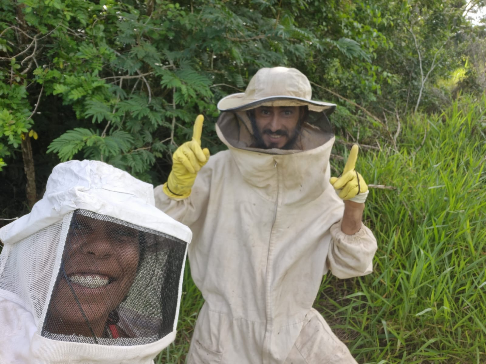
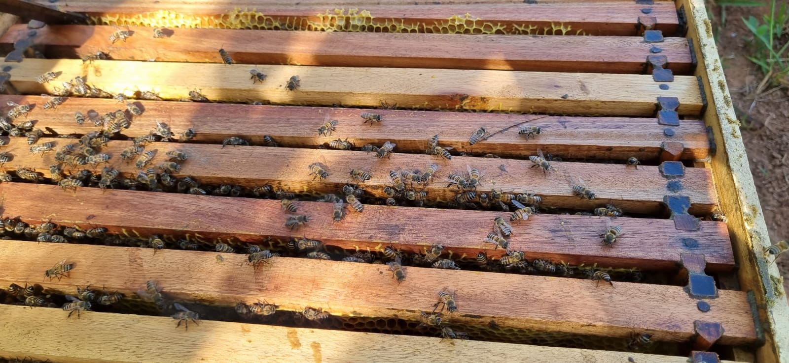
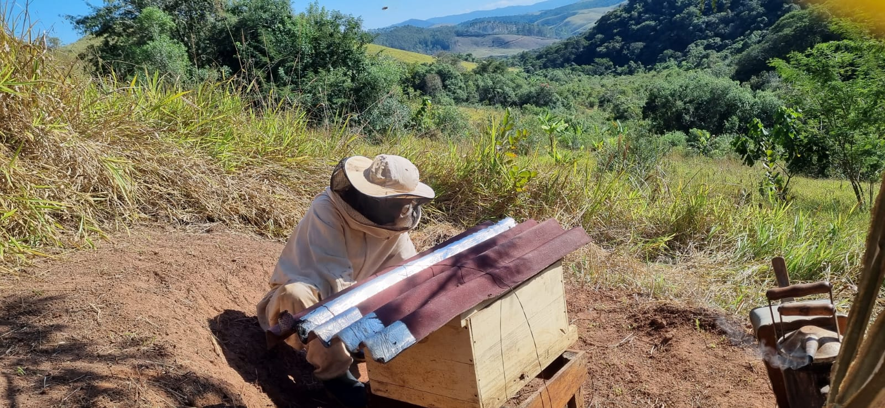
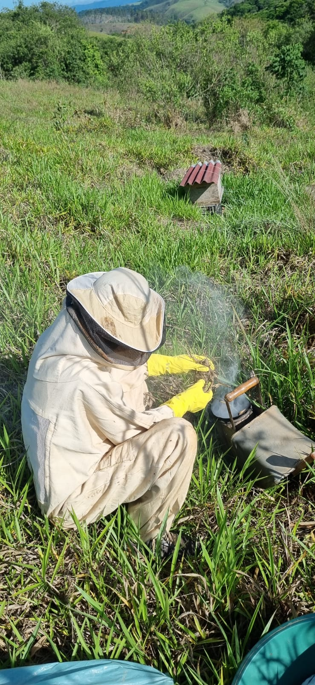
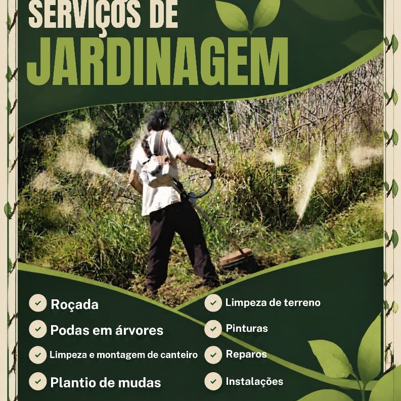

O Clã
Nossa trajetória é marcada pela transição para uma vida mais simples, consciente e alinhada aos ciclos naturais, plantando, colhendo e cuidando com as próprias mãos.
Mel, própolis, ervas e óleos feitos por uma família que vive de agroecologia na Reforma Agrária do Vale do Paraíba. Ñandereko: nosso jeito de ser e viver.
Escolha os produtos e monte seu pedido. O valor certinho a gente combina pelo WhatsApp.
Nossas tinturas fazem parte de uma proposta de alquimia spagírica vegetal, inspirada nos conhecimentos tradicionais sobre as plantas e preparada artesanalmente, valorizando cada planta dentro de uma visão integral de cuidado.
Somos uma família que vive em um assentamento agroecológico no Vale do Paraíba, interior de São Paulo, construindo na prática caminhos de reconexão com a natureza, fortalecimento dos vínculos familiares e busca por maior autonomia. Inspirados no conceito guarani Ñandereko, "nosso jeito de ser e viver", aprendemos que a autonomia nasce da união entre conhecimento, trabalho coletivo, cuidado mútuo e conexão com a terra.
Nossa trajetória é marcada pela transição para uma vida mais simples, consciente e alinhada aos ciclos naturais, plantando, colhendo e cuidando com as próprias mãos.
A luta pela terra que deu origem ao Assentamento Egídio Brunetto I, em Lagoinha, no Vale do Paraíba.
Agroecologia, apicultura biodinâmica, plantas medicinais, bioconstrução, educação familiar e vida comunitária: o passo a passo tradicional dos nossos produtos, sem pressa, do jeito que a natureza pede.
A história da luta pela terra
A antiga Fazenda Bela Vista carregava um longo histórico de conflitos e irregularidades. A área não cumpria sua função social, possuía dívidas de impostos com a União e havia denúncias relacionadas à exploração de trabalhadores em condições análogas à escravidão, além de problemas na documentação das terras, incluindo denúncias de grilagem, e crimes ambientais.
Diante desse histórico de denúncias confirmadas, a área foi decretada para fins de Reforma Agrária em 2012, sendo somente em 2025 a homologação das famílias e a criação do assentamento agroecológico Egídio Brunetto I.
Entretanto, a luta das famílias pelo acesso à terra começou muito antes. Desde 2009, famílias já denunciavam as irregularidades e reivindicavam o direito de permanecer e trabalhar naquela terra, entre elas famílias que haviam sido expulsas da área em períodos anteriores e que retornavam para reivindicar novamente seu direito à terra.
Em 2015, nossa família se juntou a essa história de resistência. Desde então, permanecemos na luta, construindo nossa vida no território e defendendo o direito de acesso livre e harmônico aos recursos naturais, à terra, à água, ao ar, à energia, à moradia, à produção agroecológica que respeite a natureza e seus ciclos, à saúde natural, à educação no campo e para o campo, e ao bem viver.
Nossa permanência não é apenas uma questão individual ou familiar. Ela faz parte de uma história coletiva de famílias que, há anos, reivindicam justiça e o direito universal de acesso e cumprimento da função social da terra em todo território nacional.
Continuamos resistindo, porque somos, na prática, no agora, as mudanças acontecendo.
Do cosmo, através das abelhas, para nossas vidas.
O Apiário Biodinâmico Mandirituba, Clã Ñande Reko, nasceu de uma caminhada construída junto às abelhas, à terra e à vida no campo.
Há quase dez anos, nossa família vem aprendendo com o universo das abelhas. Essa trajetória foi sendo formada por estudos, formações, livros, observação, conhecimento empírico e, principalmente, pela experiência cotidiana, com seus acertos, erros e descobertas.
Com o tempo, percebemos que trabalhar com abelhas poderia significar muito mais do que produzir mel. Passamos a olhar para a colmeia como um organismo vivo e para as abelhas como parte de uma rede muito maior, que envolve as flores, as plantas, o solo, a água, as árvores, o clima, os ciclos da natureza e todo o território ao seu redor.
Foi nesse caminho que encontramos na apicultura biodinâmica princípios que dialogam profundamente com a maneira como escolhemos viver e cuidar da terra.

Na perspectiva biodinâmica, uma colmeia não é compreendida simplesmente como uma caixa habitada por milhares de indivíduos. O enxame é observado como uma unidade viva, um “superorganismo”, no qual rainha, operárias, zangões, favos e todo o ambiente ao redor participam de uma mesma dinâmica.
Essa compreensão muda a relação do apicultor com as abelhas. Em vez de organizar o manejo somente a partir daquilo que pode ser retirado da colmeia, procura-se perguntar primeiro: o que esse organismo necessita para expressar sua própria natureza?
Por isso, a apicultura biodinâmica busca reduzir interferências desnecessárias e favorecer processos naturais das abelhas: a construção livre dos favos, a renovação natural da rainha, a diversidade genética e a enxameação, entendida como o processo natural de reprodução do enxame. Também valoriza a disponibilidade de água de qualidade, reservas suficientes de mel e um território rico em flores, árvores e biodiversidade. Esses princípios estão presentes no material sobre o Ser Abelha e a Agricultura Biodinâmica que orienta parte de nossa caminhada.
O próprio favo ganha outro significado nessa forma de compreender a colmeia. Ele não é visto apenas como o lugar onde o mel é armazenado: participa da organização e da comunicação de todo o organismo. Por isso, permitir que as abelhas construam seus favos naturalmente é um dos elementos importantes dessa abordagem.

Não existe uma colmeia saudável separada de um ambiente saudável.
As abelhas dependem das flores, e as flores dependem da terra, da água, das estações e de inúmeras relações ecológicas. Por isso, cuidar das abelhas também nos conduz ao cuidado com a biodiversidade, as áreas nativas e a regeneração dos ecossistemas.
Esse olhar inclui não apenas as abelhas manejadas no apiário, mas também as abelhas nativas e os demais polinizadores que compartilham o território. A própria abordagem biodinâmica apresentada em nossos materiais coloca o enxame em relação direta com o mundo das flores e com a Natureza, ampliando a ideia de colmeia para além dos limites físicos da caixa.

A agricultura biodinâmica também propõe observar a vida a partir dos ritmos da natureza.
O movimento do Sol, as estações, os ciclos de florescimento, chuva, temperatura e outros ritmos naturais fazem parte da observação cotidiana do apicultor. Dentro da tradição biodinâmica, essa percepção se amplia para uma relação entre a Terra e os ritmos cósmicos.
É desse modo de olhar que nasce uma das ideias centrais do nosso trabalho:
Do cosmo, através das abelhas, para nossas vidas.
Para nós, essa frase representa um caminho.
O cosmo encontra a Terra.
A Terra sustenta as plantas.
As plantas oferecem suas flores.
As abelhas percorrem o território.
E dessa relação surgem o mel, a própolis, a cera e tantos outros presentes da colmeia.
Quando esses produtos chegam às nossas mãos, existe por trás deles uma história muito maior do que aquilo que cabe dentro de um frasco.
No Apiário Biodinâmico Mandirituba, buscamos desenvolver uma apicultura baseada na observação, no respeito e na mínima interferência necessária.
Não entendemos a colmeia como uma fábrica de produtos. Buscamos compreender o Ser Abelha, respeitar sua organização e criar condições para que os enxames possam viver em um ambiente diverso e equilibrado. O mel, a própolis e os demais produtos são consequência dessa relação, e não sua única finalidade.
Essa caminhada também está profundamente ligada ao Clã Ñande Reko, expressão que traduzimos como “nosso jeito de ser”. Nossa vida no campo, a agroecologia, a autonomia familiar, a educação, o cuidado com a terra e a relação com as abelhas não são projetos separados: fazem parte de uma mesma escolha de vida.
Por isso, o Mandirituba é mais do que um apiário. É também um espaço de aprendizagem, experimentação e partilha de conhecimentos. É onde buscamos unir experiência prática, saberes construídos ao longo dos anos e os princípios da apicultura biodinâmica para desenvolver outra forma de relação entre seres humanos, abelhas e território.
Ainda temos muito a aprender, e talvez essa seja uma das maiores lições que as abelhas nos oferecem. Entrar no universo de uma colmeia é perceber que nenhuma vida existe sozinha.

Além dos produtos da roça, o Clã oferece serviços feitos com o mesmo cuidado com a terra e com as pessoas. Chame direto quem executa e peça seu orçamento.

Roçada, podas, plantio de mudas e cuidados com o terreno, com atenção ao ambiente e ao ciclo das plantas.
Tranças e dreads feitos à mão por Tainara Lira, com cuidado com o cabelo e com o seu estilo.
Cada lote é pequeno e sazonal. Monte seu carrinho, cadastre nome e WhatsApp e fale com a gente pelo chat: combinamos juntos a taxa de entrega e o prazo certinho para o seu pedido.